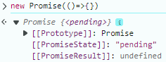

尝试手写
让
嗨，你听说了吗？最近
真的吗？这不是咱的强项嘛，我先弄一个，你看看效果……
当你
我去，你弄的太松驰了，什么东西都可以弄进去，人家只允许
😅，你稍等，马上支持上……
知己知彼，方能百战百胜。还是先看看人家是怎么弄的，原生的
咱们的是这样的
既然可以
这是什么玩意儿啊！人家
亲爱的上帝，您别急，咱们的毕竟是伪造的，但是终究物美价廉不是，
真不容易啊，还是得先看看人家的。原生的
new Promise(()=>{})
请看正版的输出结果

咱们的是这样的，您放心绝对不影响你使用，并且终身质保
咱先对一下暗号，
重点：executor（类型是 function）是你定义并传入的，由
不行，还是不行，人家的只要一
您先别着急，我给您看看……
真不能偷懒啊，还得看看人家的。原生的
// 你可以看看输出顺序是什么？
function executor() {
console.log(1);
}
new Promise(executor);
console.log(2);
咱们的是这样的
在
重点：这两个方法由
哎，哎，哎，不对呀！我记得人家的
您别急啊，先消消气儿，马上给您安排
原生的
function executor() {
console.log("参数长度：", arguments.length);
for (var i = 0; i < arguments.length; i++) {
console.log("第" + (i + 1) + "个参数的类型：", typeof arguments[i]);
}
}
new Promise(executor);
咱们的是这样的
原生的
咱们的是这样的
哎，哎，哎，你看看人家
😅，咱也不是那人啊，马上给您解决，虽然质量是差了点，但是咱们的服务是刚刚……
原生的
咱们的是这样的
你别说
都给你说了好几遍了，你就是太松驰了，你还不信，你看看人家
（怎么又出问题了，辛亏是个小问题）好滴，好滴，马上给您解决，你就敬听佳音吧！
原生的
function executor1(resolve, reject) {
// 制造异常：访问未声明的变量
console.log(xiaodu114);
}
console.log(new Promise(executor1));
咱们的是这样的
这里咱们和原生的略有不同：原生的不但修改了
故事编不下去了，就这样吧！老老实实写代码吧
既然是一个方法，并且还是咱自己调用的，看看他需要什么参数。根据
重点：这两个方法由你指定，
原生的
咱们的是这样的
既然是一个方法，那肯定有返回值啊，就算是
原生的
var p1 = new Promise(function (resolve, reject) {
resolve("xiaodu114");
});
var p1_1 = p1.then(
function (data) {
console.log("成功：", data);
},
function (error) {
console.log("失败：", error);
}
);
console.log("then 方法的返回值：", p1_1);
咱们的是这样的
这里出现了两个问题：
上面的代码都是同步执行的：你 new ，promise 调用 executor，接着你调用 resolve / reject，promise 修改 State 和 Result，接着你调用 then 方法，promise 在 then 中调用你的 onFulfilled / onRejected，这一切似乎都这么美好。突然有一天，你没有立即调用 resolve / reject，而是看了会儿《熊出没》才想起了，结果 promise 就不鸟你了。人家 promise 是由原则的，只有在 State 改变之后才会调用 onFulfilled / onRejected。在咱这里当然是个 bug ，咱赶紧修复一下
原生的
咱们的是这样的
在你
原生的
咱们的是这样的
上面的
原生的
咱们的是这样的
这里在测试咱们自己的
你别说
原生的
咱们的是这样的
咱用
原生的
var p = new Promise(function (resolve, reject) {
console.log("调用 resolve 之前");
resolve("xiaodu114");
console.log("调用 resolve 之后");
});
p.then(
function (data) {
console.log("成功回调：" + data);
},
function (error) {}
);
console.log("啥时候调用这个……");
咱们的是这样的